승강기기사 (2013-09-28 기출문제)
1과목: 승강기 개론
1. 유압엘리베이터의 오일(oil)의 온도는 약 몇 ℃ 정도로 유지하는 것이 가장 적정한가?
- -20~5
- 5~60
- 0~80
- 40~90
(정답률: 89%)

2. 양 단계에서 로프가 느슨해지면 로프의 장력을 검출하여 동력을 끊어주는 안전장치는?
- 리미트스위치
- 권동식 로프 이완 스위치
- 록 다운 비상스위치
- 정지스위치
(정답률: 88%)
3. 카의 실속도와 지령속도를 비교하여 사이리스터의 점호각을 바꿔 유도전동기의 속도를 제어하는 방식은?
- 교류 1단 속도제어
- 교류 2단 속도제어
- 교류귀환 전압제어
- 가변전압 가변주파수 제어
(정답률: 75%)
4. 로프의 단말처리 요건으로 틀린 것은?
- 주로프는 소켓의 끝부분에서 각 가닥을 접어서 구부린 것이 눈으로 보여서는 안된다.
- 주로프의 걸어 맨 고정부위는 2중 너트로 견고히 조여야 한다.
- 주로프의 고정부위는 풀림방지를 위한 분할핀이 꽂혀 있어야 한다.
- 모든 로프는 균등한 장력을 받고 있어야 한다.
(정답률: 76%)
5. 트랙션비(Traction ratio)를 바르게 설명한 것은?
- 트랙션비는 1.0 이하의 수치가 된다.
- 트랙션비의 값이 낮아지면 로프의 수명이 길어진다.
- 카측과 균형추측의 중량의 차이를 크게 하면 전동기출력을 줄일 수 있다.
- 카측 로프에 걸린 중량과 균형추측 로프에 걸린 중량의 합을 말한다.
(정답률: 79%)
6. 제어방식 중 VVVF 제어의 특성이 아닌 것은?
- 중ㆍ저속 엘리베이터에서 승차감이 향상되었다.
- 전력회생을 통해 소비전력을 줄일 수 있다.
- 사이리스터의 점호각을 바꿔 속도를 제어한다.
- 적용속도가 저속에서부터 고속까지 가능하다.
(정답률: 77%)
7. 에스컬레이터 핸드레일 인입구에 각종 이물질이나 사람의 손가락 등이 빨려 들어가는 것을 방지하기 위한 안전장치는?
- 비상정지 스위치
- 스커트가드 안전장치
- 핸드레일 인입구 안전장치
- 구동체인 안전장치
(정답률: 80%)
8. 승객용 엘리베이터의 강제 각층 정지운전은 왜 필요할까?
- 야간에 엘리베이터의 안전 운전을 위하여
- 야간에 엘리베이터를 오래 사용하기 위하여
- 야간에 카내의 범죄 예방을 위하여
- 야간에 승객의 편의를 위하여
(정답률: 81%)
9. 다음 중 기계실에 설치되는 부품이 아닌 것은?
- 감시반
- 제어반
- 분전반
- 전동기
(정답률: 72%)
10. 권상기의 주 도르래의 흠 밑을 도려낸 언더커트흠을 사용하는 이유로 가장 알맞은 것은?
- 제조시 가공을 편리하게 하기 위해서
- 로프와의 마찰계수를 크게 하기 위해서
- 로프직경을 줄이기 위해서
- 마모를 줄이기 위해서
(정답률: 78%)
11. 전기식 엘리베이터의 검사 항목 중 계측장비를 사용하여야 할 측정 항목이 아닌 것은?
- 전동기구동시간 제한장치
- 승강로 조도
- 조속기 작동속도
- 개문출발방지수단 정지거리
(정답률: 60%)
12. 승강로 벽의 재료로 사용할 수 없는 것은?
- 준불연재료
- 철골
- 콘크리트
- 접합유리
(정답률: 58%)
13. 유압 엘리베이터의 장점은?
- 전동기의 용량과 소비전력이 작다.
- 기계실의 위치선택이 용이하다.
- 10층 이상의 고층용으로 사용된다.
- 고속용에 주로 사용된다.
(정답률: 79%)
14. 일반적으로 고속의 엘리베이터에 주로 많이 이용되는 조속기는?
- 플라이 볼형
- 디스크형
- 스프링형
- 롤세이프티형
(정답률: 78%)
15. 정격속도가 45m/min인 엘리베이터의 꼭대기 틈새와 피트 깊이는 얼마 이상이어야 하는가?(오류 신고가 접수된 문제입니다. 반드시 정답과 해설을 확인하시기 바랍니다.)
- 꼭대기 틈새 : 1.2m, 피트 깊이 : 1.2m
- 꼭대기 틈새 : 1.5m, 피트 깊이 : 1.5m
- 꼭대기 틈새 : 1.8m, 피트 깊이 : 1.8m
- 꼭대기 틈새 : 2.0m, 피트 깊이 : 2.0m
(정답률: 61%)
16. 오버밸러스율(Over Balance)에 대한 설명 중 틀린 것은?
- 엘리베이터의 사용 상황에 따라 적재하중의 35~55%의 중량이 더한 값이 보통이다.
- 적재하중의 몇 %를 더할 것인가를 오버밸러스율이라 한다.
- 적재하중 500kg 이하의 소형 엘리베이터는 정격하중의 50%를 넘게 하는 경우도 있다.
- 소형의 엘리베이터에서는 1명 승차시에 불평형이 발생하지 않는다.
(정답률: 64%)
17. 카틀이 레일에서 벗어나지 않도록 하는 것은?
- 조속기
- 가이드 슈
- 균형로프
- 제동기
(정답률: 84%)
18. 카가 어떤 원인으로 최하층을 통과하여 피트에 도달하였을 때 카의 충격을 완화해주는 장치는?
- 비상정지장치
- 완충기
- 브레이크
- 조속기
(정답률: 84%)
19. 승객용 엘리베이터의 동력이 차단되어서 카가 층 중간에 정지했을 때 가로열기 도어시스템에서 수동으로 카 도어를 여릭 위한 힘의 범위로 가장 적당한 것은?
- 1kgf이상 10kgf이하
- 5kgf이상 30kgf이하
- 20kgf이상 40kgf이하
- 30kgf이상 50kgf이하
(정답률: 79%)
20. 균형추측에 비상정지장치를 설치하는 경우의 조속기작동에 관한 설명으로 옳은 것은?
- 카측의 90%속도에서 작동해야 한다.
- 카측보다 빠르거나 같을 때 작동해야 한다.
- 카측보다 나중에 작동해야 한다.
- 카측과 같은 속도로 동시에 작동해야 한다.
(정답률: 50%)
2과목: 승강기 설계
21. 화재 시 비상 호출운전에 대하여 틀린 것은?
- 과부하 시 경보만 발하고 과부하감지장치는 무효로 한다.
- 비상운전의 일부이지만 세프티 슈의 기능은 유효로 한다.
- 엘리베이터 과부하 사용으로 착상정도가 나빠진다.
- 카가 상승운전중인 경우에는 가장 가까운 층에 정지하고 문을 열지 않고 반전하여 호출 층으로 직행한다.
(정답률: 50%)
22. 꼭대기 틈새 최소치가 3.3.m이고, 피트 깊이가 3.8m인 경우 엘리베이터의 정격속도[m/min]는?(오류 신고가 접수된 문제입니다. 반드시 정답과 해설을 확인하시기 바랍니다.)
- 120초과 ~ 150이하
- 150초과 ~ 180이하
- 180초과 ~ 210이하
- 210초과 ~ 240이하
(정답률: 45%)
23. 직류 엘리베이터에서 동력전원설비인 변압기의 용량은
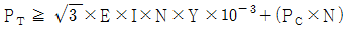
으로 설계된다. 여기서 정격전류 I[A]에 대한 설명으로 알맞은 것은? (단, PT은 변압기용량[kVA], E는 정격전압[V], N은 엘리베이터 대수[대], Y는 부등률, PC는 제어용 전력[kVA]이다.)- 정격속도로 전부하 상승시의 배전선에 흐르는 전류
- 정격속도로 전부하 하강시의 배전선에 흐르는 전류
- 정격속도로 무부하 상승시의 배전선에 흐르는 전류
- 정격속도로 무부하 하강시의 배전선에 흐르는 전류
(정답률: 61%)
24. 엘리베이터의 전원이 3상3선식인 경우 전압강하를 계산하는데 필요하지 않은 것은?
- 선로 1m당 저항
- 전선의 최대허용전류
- 최대부하전류
- 선로의 길이
(정답률: 50%)
25. 플린저 여유 스트로크에 의한 카의 이동거리 30cm, 카의 정격속도 45m/min인 간접식 유압 엘리베이터의 꼭대기부분 틈새는 약 몇 [cm] 이상으로 하여야 하는가?
- 60
- 63
- 90
- 93
(정답률: 36%)
26. 주행시간은 가속시간, 감속시간 및 전속주행시간의 합으로 구성된다. 따라서 주행시간에 영향을 미치는 요소가 아닌 것은?
- 정격속도
- 정지회수
- 행정거리
- 강제감속거리
(정답률: 64%)
27. 백화점에 엘리베이터와 에스컬레이터를 설치할 때 에스컬레이터의 수송분담률은 엘리베이터와 에스컬레이터 이용자 수의 몇 [%]가 적당한가?
- 20~30%
- 40~50%
- 60~70%
- 80~90%
(정답률: 66%)
28. 초고층 빌딩에서 서비스 층의 분할 방법에 관한 설명 중 틀린 것은?
- 한 구역의 층수는 그 그룹의 엘리베이터에서 처리 가능한 교통량으로 하여야 한다.
- 메인 로비와 스카이 로비 등 공공장소에는 모든 층에서 엘리베이터가 직행 가능하도록 계획한다.
- 임대사무실 빌딩에서는 한 입주사는 둘 이상의 서비스 구역으로 분산하는 것이 좋다.
- 서비스 층을 분할하면 저ㆍ중층용 엘리베이터 기계실 상부를 사무실 등으로 사용이 가능하다.
(정답률: 57%)
29. 경사각이 30°, 속도가 30m/min, 디딤판폭이 0.8m이며, 층고가 9m인 에스컬레이터의 적재하중은 약 얼마인가?
- 3596kg
- 3367kg
- 2916kg
- 2438kg
(정답률: 59%)
30. 엘리베이터용 감시반에 대한 설명 중 옳지 않은 것은?
- 감시반의 가장 큰 목적은 승객의 안전확보 및 신속한 구출을 위한 것이다.
- 감시반의 기능에는 제어기능, 표시기능, 경보기능 및 승객감시기능이 있다.
- 일반감시반에는 벽걸이형, 캐비넷형, 콘솔형, 탁상형이 있다.
- 컴퓨터감시반은 고장검출 및 분석과 교통량분석도 가능하다.
(정답률: 71%)
31. 카 자중이 1400kg, 균형추 중량이 1850kg, 정격적재하중이 1000kg일 때 로프식(전기식) 엘리베이터의 오버밸런스율은 몇 [%]인가?
- 32
- 45
- 61
- 72
(정답률: 67%)
32. 엘리베이터를 설치할 때 승강로의 크기를 결정하려고 한다. 이때 고려하지 않아도 되는 사항은?
- 엘리베이터 인승
- 엘리베이터 속도
- 엘리베이터 대수
- 엘리베이터 출입문의 크기
(정답률: 52%)
33. 조속기에 대한 설명으로 틀린 것은?
- 조속기 로프의 공칭지름은 6mm 이상 이어야 한다.
- 과속 발생시 정격속도의 1.3배 이내에 과속 스위치가 동작하여 전동기 전원을 차단하여야 한다.
- 조속기용 도르래의 홈은 적용로프 직경의
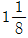
배 이하의 홈 직경이어야 한다. - 조속기 도르래의 피치지름과 로프의 공칭지름의 비는 36 이상이다.
(정답률: 59%)
34. 고속 엘리베이터에 주로 많이 사용하고 있는 로프의 거는 방법은?
- 1:1로핑
- 2:1로핑
- 3:1로핑
- 4:1로핑
(정답률: 50%)
35. 승강기 카와 균형추 하부에는 반드시 완충기를 설치하도록 하고 있다. 스프링 완충기는 정격속도가 몇 [m/min] 이하인 경우에 설치하여야 되는가?
- 60
- 70
- 90
- 1⑤
(정답률: 73%)
36. 권상기의 시브 직경은 주로프 직경의 몇 배 이상이 가장 안전한가?
- 20배
- 30배
- 35배
- 40배
(정답률: 76%)
37. 전기식 엘리베이터의 카 천장에 설치된 비상구출구의 크기 기준으로 옳은 것은?(관련 규정 개정전 문제로 여기서는 기존 정답인 1번을 누르면 정답 처리됩니다. 자세한 내용은 해설을 참고하세요.)
- 0.35[m]×0.5[m] 이상
- 0.25[m]×0.3[m] 이상
- 0.35[m]×0.4[m] 이상
- 0.25[m]×0.4[m] 이상
(정답률: 67%)
38. 유압식 엘리베이터에 있어서 유량제어 밸브를 주회로에 삽입하여 유량을 직접 제어하는 회로는 어느 것인가?
- 미터 인(Meter in)회로
- 블리드 오프(Bleed off)회로
- 바이패스(Bypass)회로
- 파이롯(Pilot)회로
(정답률: 74%)
39. 엘리베이터 기계실 및 기계대의 설치 사항으로 잘못된 것은?
- 기계실 바닥은 금속판 또는 콘크리트로 축조한다.
- 옹벽이 있는 경우는 기계대가 75mm 이상 벽으로 묻히게 한다.
- 옹벽이 없는 경우는 기계대 지지를 위한 H형 보강빔을 설치한다.
- 기계실 바닥면의 단차가 0.5m 이상인 경우는 높은쪽에 난간을 설치하지 않아도 된다.
(정답률: 68%)
40. 유압실린더의 설계에 관한 사항으로 옳은 것은? (단, p : 사용압력[kg/cm2], d : 실린더 내경[cm], s : 설계압력[kg/cm2], r : 오목면을 측정한 헤드반경)
- 실린더 설계시 안전율은 10 이상이어야 한다.
- 실린더 벽의 최소 두께는
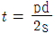
에 의하여 구한다. - 평평한 플런저헤드의 최소두께는
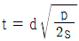
로 구한다. - 접시모양 플런저헤드의 최소두께는
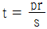
로 구한다.
(정답률: 50%)
3과목: 일반기계공학
41. 다음 중 선반에서 할 수 있는 작업이 아닌 것은?
- 총형 절삭
- 널링 가공
- 테이퍼 가공
- 기어 가공
(정답률: 69%)
42. 일반적인 체인전동장치의 장ㆍ단점에 대한 설명으로 틀린 것은?
- 미끄럼이 없는 일정한 속도비를 얻을 수 있다.
- 진동과 소음이 거의 없다.
- 전동효율이 95% 이상으로 좋다.
- 고속회전에는 부적당한 편이다.
(정답률: 76%)
43. 자동차에서는 연비 상승을 위해 경량화(輕量化) 재료의 사용이 늘고 있다. 이와 같은 제품의 경량화와 가장 관계가 적은 재료는?
- 고장력 강판
- 알루미늄
- 유리섬유 강화 플라스틱
- 표면처리강판
(정답률: 60%)
44. 양은(german silver)이라 부르는 비철 금속은 무엇의 합금인가?
- Cu-Zn계 합금이다.
- Cu-Ni-Zn계 합금이다.
- Cu-Sn-Ni계 합금이다.
- Cu-Ni계 합금이다.
(정답률: 69%)
45. 선반에서 4개의 죠(jaw)가 각기 움직일 수 있어 불규칙한 일감을 고정시키는데 적합한 척은?
- 단동척
- 연동척
- 콜릿척
- 전자척
(정답률: 62%)
46. 펌프의 분류를 크게 터보식과 용적식으로 분류할 때 다음 중 용적식 펌프에 속하는 것은?
- 벌류트 펌프
- 축류 펌프
- 베인 펌프
- 터빈 펌프
(정답률: 68%)
47. 유체를 한쪽으로만 흐르게 하고 역류가 되면 즉시 자동적으로 밸브가 닫히게 되어 유체가 역류되는 것을 막아주는 밸브는?
- 릴리프 밸브(relief valve)
- 감압 밸브(pressure reducing valve)
- 무부하 밸브(unload valve)
- 체크 밸브(check valve)
(정답률: 77%)
48. 절삭 가공시 구성인선(built up edge)을 방지하기 위한 대책으로 옳지 못한 것은?
- 절삭 깊이(cut of depth)를 작게 할 것
- 절삭 속도(cutting speed)를 크게 할 것
- 경사각(rake angle)을 작게 할 것
- 공구의 인선(cutting edge)을 예리하게 할 것
(정답률: 66%)
49. 심용접(seam welding)은 점용접보다 전극 사이의 가압력을 몇 배 정도로 해야 가장 적합한가?
- 3.0~3.6배
- 2.0~2.6배
- 1.6~2.0배
- 1.2~1.6배
(정답률: 49%)
50. 그림과 같은 유압회로는 어떤 회로인가?
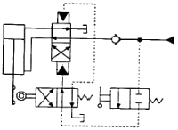
- 브레이크 회로
- 로크 회로
- 파일럿 조작 회로
- 정토크 구동 회로
(정답률: 72%)
51. 다음 중 미소 이동량의 확대 지시장치로 레버(lever)를 이용하는 측정기는?
- 마이크로미터
- 미니미터
- 다이얼게이지
- 옵티미터
(정답률: 70%)
52. 표준 스퍼 기어의 잇수를 Z, 모듈을 M, 원주피치(circlar pitch)를 P, 피치원(pitch circle) 지름을 D라 할 때 다음 관계식 중 틀린 것은?
- Z = πㆍP
- πㆍD = ZㆍP
- D = MㆍZ
- P = πㆍM
(정답률: 53%)
53. 그림과 같은 기어 열에서 기어 잇수가 Z1 = 20, Z2 = 85, Z3 = 25, Z4 = 100일 때, Z1, Z4 의 회전수 비 n1:n4 는?
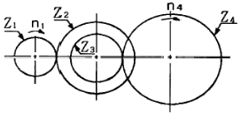
- 17 : 1
- 15 : 1
- 13 : 1
- 10 : 1
(정답률: 53%)
54. 바깥지름이 d이고, 안지름이
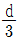
인 중공원형 단면축의 단면계수(Z)는 얼마인가?(오류 신고가 접수된 문제입니다. 반드시 정답과 해설을 확인하시기 바랍니다.)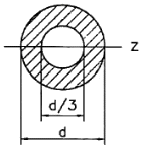
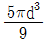
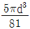
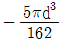
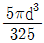
(정답률: 46%)
55. 52kN의 인장력을 지탱할 수 있는 훅 나사부의 골지름은 약 몇 mm 이상이어야 하는가? (단, 나사 재료의 허용인장응력은 60N/mm2 이다.)
- 17
- 21
- 33
- 42
(정답률: 33%)
56. 축제 접선방향으로 작용하는 하중에 대해 다음 중 가장 큰 힘을 전달할 수 있는 키는?
- 안장 키
- 묻힘 키
- 접선 키
- 납작 키
(정답률: 69%)
57. 금속재료를 고온에서 장시간 외력을 가하면 시간의 흐름에 따라 변형이 증가하게 되는데 이러한 현상을 무엇이라고 하는가?
- 열응력
- 피로한도
- 탄성에너지
- 크리프
(정답률: 74%)
58. 전체 길이에 균일분포하중을 받는 외팔보에서 자유단 처짐량에 대한 설명 중 틀린 것은?
- 처짐량은 보 길이의 3승에 비례한다.
- 처짐량은 단면2차모멘트(I)에 반비례한다.
- 처짐량은 균일분포하중(N/m)에 비례한다.
- 처짐량은 세로탄성계수에 반비례한다.
(정답률: 42%)
59. 축의 비틀림 모멘트를 T[Nㆍm], 분당회전수를 N[rpm], 전달 동력을 H[W]라 할 때, T 를 구하는 식으로 옳은 것은?
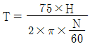
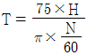
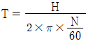
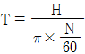
(정답률: 56%)
60. 직사각형 단면의 높이가 폭의 2배인 단순보에 굼힘 모멘트가 54 Nㆍm 작용할 때, 굽힘 응력이 200N/cm2 인 경우 단면의 폭은 약 몇 cm 인가?
- 2.2
- 3.0
- 4.5
- 5.0
(정답률: 34%)
4과목: 전기제어공학
61. 단위 피드백 제어계통에서 입력과 출력이 같다면 전향전달함수 G의 값은?
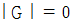
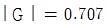
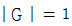
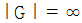
(정답률: 59%)
62. 그림에서 E, R1, R2를 일정하게 하고 R을 변화시킬 때 R의 소비전력이 최대가 되는 R의 값은?
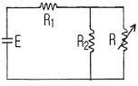
- R1 + R2
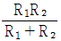
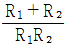
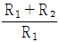
(정답률: 62%)
63. 특성 방정식이 s3 + 2s2 + 3s + 4 = 0일 때 이 계통의 설명으로 맞는 것은?
- 불안정하다.
- 안정하다.
- 알 수 없다.
- 조건부 안정하다.
(정답률: 62%)
64. 다음 중 3상 유도전동기 기동방법이 아닌 것은?
- 전전압 기동법
- 기동 보상기법
- 저항 기동법
- 리액터 기동법
(정답률: 48%)
65. 서보 기구의 특징이 아닌 것은?
- 신호는 디지털 신호의 경우가 많다.
- 제어량이 기계적 변위이다.
- 추치제어에 해당하는 제어장치가 많다.
- 원격제어의 경우가 많다.
(정답률: 62%)
66. 자동제어계의 디지털 제어에 적합한 전동기는?
- 유도전동기
- 직류전동기
- 스텝전동기
- 동기전동기
(정답률: 49%)
67. R, L, C가 서로 직렬로 연결되어 있는 회로에서 양단의 전압과 전류가 동상이 되는 조건은?
- ω = LC
- ω = L2C
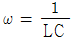
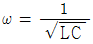
(정답률: 74%)
68. 10분간은 100[kW]의 부하이고, 50분간은 20[kW]의 부하로 반복되는 유도전동기의 제곱평균법에 의한 등가적인 연속 출력은 약 몇 [kW] 인가?
- 22.4
- 29.6
- 33.3
- 44.7
(정답률: 26%)
69. 그림과 같은 논리회로의 논리식은?
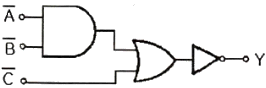
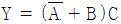
- Y = (A+B)C
- Y = A(B+C)
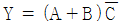
(정답률: 56%)
70. 효율 80%, 출력 10[kW]인 전동기의 손실은 몇 [kW] 인가?
- 2.0
- 2.5
- 3.0
- 3.5
(정답률: 50%)
71. 교류(Alternating current)를 나타내는 값 중 임의의 순간의 크기를 나타내는 것은?
- 최대값
- 평균값
- 실효값
- 순시값
(정답률: 70%)
72. 3상 유도전동기의 출력이 10[kW], 슬립이 4.8%일 때의 2차 동손은 약 몇 [kW] 인가?
- 0.24
- 0.36
- 0.5
- 0.8
(정답률: 38%)
73. 영구자석의 재료로 요구되는 사항은?
- 잔류자기 및 보자력이 큰 것
- 잔류자기가 크고 보자력이 적은 것
- 잔류자기는 작고 보자력이 큰 것
- 잔류자기 및 보자력이 적은 것
(정답률: 56%)
74. SCR에 관한 설명 중 틀린 것은?
- 양방향성 사이리스터이다.
- 직류나 교류의 전력제어용으로 사용된다.
- 스위칭 소자이다.
- PNPN소자이다.
(정답률: 69%)
75. 전기기기 및 전로의 누전여부를 알아보기 위한 계측기는?
- 전압계
- 전류계
- 메거
- 검전기
(정답률: 53%)
76. 제어량이 온도, 압력, 유량 및 액면 등 일 경우에 해당되는 제어는?
- 프로세스 제어
- 프로그램 제어
- 추종 제어
- 시퀀스 제어
(정답률: 56%)
77. 전류의 전기 작용 중 열작용과 가장 밀접한 관계가 있는 법칙은?
- 줄의 법칙
- 쿨롱의 법칙
- 옴의 법칙
- 페러데이의 법칙
(정답률: 60%)
78. 전원전압을 안정하게 유지하기 위하여 사용되는 다이오드로 가장 알맞은 것은?
- 보드형 다이오드
- 제너 다이오드
- 터널 다이오드
- 바렉터 다이오드
(정답률: 67%)
79. 그림과 같이 500[kΩ]의 가변저항기에 병렬로 저항 R을 접속하여 합성저항을 100[kΩ] 으로 만들려고 한다. 저항 R을 몇 [kΩ] 으로 하면 되는가?
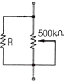
- 100
- 125
- 200
- 250
(정답률: 59%)
80. 전달함수의 정의는?
- 모든 초기값을 0으로 하였을 때 계의 출력신호의 라플라스 변환과 입력신호의 라플라스 변환의 비
- 모든 초기값을 1으로 하였을 때 계의 출력신호의 라플라스 변환과 입력신호의 라플라스 변환의 비
- 모든 초기값을 ∞으로 하였을 때 계의 출력신호의 라플라스 변환과 입력신호의 라플라스 변환의 비
- 모든 초기값을 입력과 출력의 비로 한다.
(정답률: 51%)